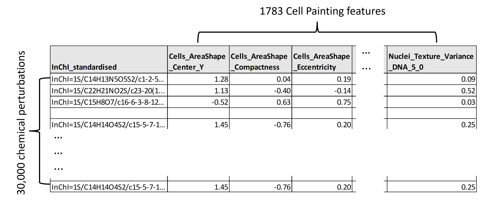

BioMorph
Dataset
Metadata
A CSV.GZ containing the BioMorph features for 30,000+ perturbations and ~400 profiles. The schema is provided in the About tab.
Download (50 MB)
Cell Painting
Dataset
Metadata
A CSV containing the 1700+ Cell Painting features derived using CellProfiler for 30,000+ perturbations.
Download (1.1 GB)
